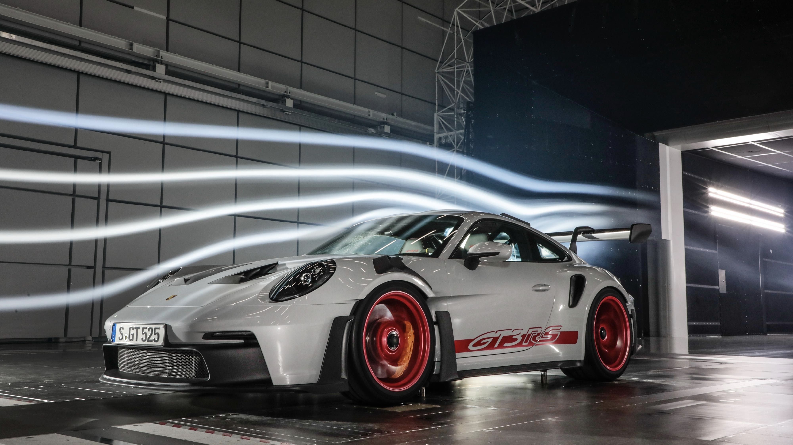

Los atletas lo saben: el máximo rendimiento requiere algo más que condiciones perfectas y suerte. El factor decisivo es la voluntad incondicional de volverse más rápido y más fuerte con cada sesión de entrenamiento. Cuestionarse todo, especialmente a sí mismo. Y aprender el máximo de cada error. Porque el mayor desafío es permanecer imbatible. Solo con este enfoque, Porsche es capaz de seguir ampliando los límites de lo factible. Para un aumento adicional del rendimiento en el circuito, gracias a un agarre radical y la amplia construcción ligera. Experimente el nuevo 911 GT3 RS en su máximo rendimiento
